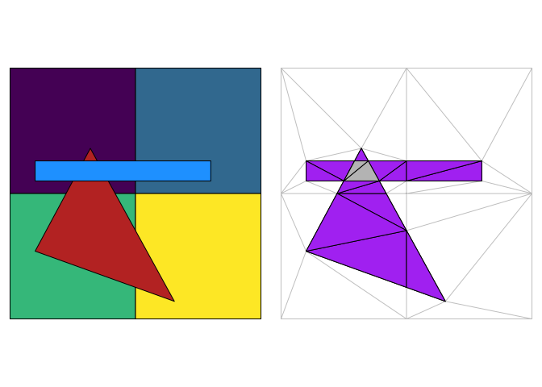
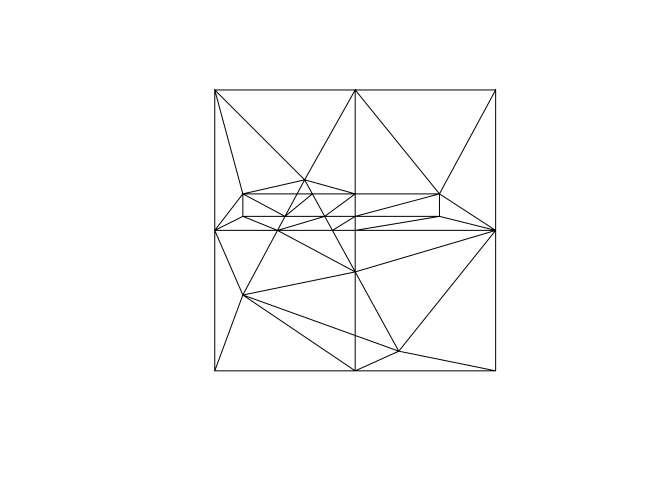
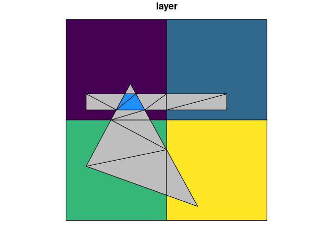

The goal of polymer is to provide flexible and intuitive overlay methods (familiar to GIS workflows) but with any number of input layers.
The plot on the left shows 3 overlapping polygon layers, four squares on the bottom, then a single triangle, and then a blue elongated rectangle. The next panel shows the entire mesh with every input edge included, the purple region has two overlappping polygons, the grey region has three. We can distinguish the various layers by what parts of the plane they occupy, with finite elements that collectively capture the input shapes.

This works via finite-element decomposition of all component edges in all inputs as triangles. Triangle instances are classified (by point-in-polygon lookup) by inclusion within paths within objects within layers.
There are two functions:
-
polymer()build the triangle pool from 1 or more input layers -
layer_n()extract a simple features layer composed of n-overlaps from the inputs topolymer()(default is 2)
There are print and plot methods for the polymer pool.
We currently do not keep the input layers linked in the output from layer_n() but this will be a key feature in future versions. (You can set an argument to keep them if you are adventurous). We need some intermediate forms because sf itself cannot store multi-relations without duplicating geometries.
WIP
- holes are identifiable but not yet explicitly classified
- extend sb_intersection to return the right parts
- write sensible return types and include nput attributes
Installation
Install the development version from GitHub with:
# install.packages("devtools")
devtools::install_github("mdsumner/polymer")Example
This example takes three built in data sets and merges them together as an indexed mesh.
library(polymer)
plot(sf::st_geometry(A), col = viridis::viridis(nrow(A)))
plot(sf::st_geometry(B), col = "firebrick", add = TRUE)
plot(sf::st_geometry(C), col = "dodgerblue", add = TRUE)
## summarize the contents
(pool <- polymer(A, B, C))
#> polymer mesh:
#> Layers: 3
#> Polygons: 6
#> Triangles: 42
#> (Overlaps: 15)
## show the components pieces
plot(pool, asp = 1)
The next stage pulls out the intersection layer, currently we only have a function to plot the identified triangles - but work to come will identify them individually and copy attributes from the input layers appropriately.
plot(pool, col = "firebrick", show_intersection = TRUE)
## it works with pairs or with multiple layers
plot(polymer(A, B), col = "firebrick", show_intersection = TRUE)

set.seed(sum(match(unlist(strsplit("polymer", "")), letters)))
## number of layers is arbitrary
plot(polymer(C, B, A, sf::st_jitter(A, 0.1)), col = "firebrick", show_intersection = TRUE)
A function layer_n will pull out any >=n overlaps.
plot(A["layer"], col = viridis::viridis(nrow(A)), reset = FALSE)
plot(B, add = TRUE, col = "hotpink")
plot(C, add = TRUE, col = "firebrick")
plot(A["layer"], col = viridis::viridis(nrow(A)), reset = FALSE)
plot(B, add = TRUE, col = "hotpink")
plot(C, add = TRUE, col = "firebrick")
sb <- polymer(A, B, C)
plot(layer_n(sb), add = TRUE, col = "grey")
plot(layer_n(sb, n = 3), add = TRUE, col = "dodgerblue")
x <- layer_n(sb, n = 3)
## see how we know the identity of each input layer
tibble::as_tibble(x) %>% dplyr::select(-geometry) %>% tidyr::unnest()
#> Warning: `cols` is now required when using unnest().
#> Please use `cols = c()`
#> # A tibble: 2 × 1
#> id
#> <int>
#> 1 1
#> 2 2
plot(soil, col = sf::sf.colors(n = nrow(soil)), border = NA, reset = FALSE)
#> old-style crs object detected; please recreate object with a recent sf::st_crs()
#> old-style crs object detected; please recreate object with a recent sf::st_crs()
#> old-style crs object detected; please recreate object with a recent sf::st_crs()
#> old-style crs object detected; please recreate object with a recent sf::st_crs()
#> old-style crs object detected; please recreate object with a recent sf::st_crs()
#> old-style crs object detected; please recreate object with a recent sf::st_crs()
plot(field, add = TRUE, col = NA)
#> old-style crs object detected; please recreate object with a recent sf::st_crs()
soil_field <- polymer(soil, field)
#> old-style crs object detected; please recreate object with a recent sf::st_crs()
#> old-style crs object detected; please recreate object with a recent sf::st_crs()
#> old-style crs object detected; please recreate object with a recent sf::st_crs()
#> old-style crs object detected; please recreate object with a recent sf::st_crs()
#> old-style crs object detected; please recreate object with a recent sf::st_crs()
#> old-style crs object detected; please recreate object with a recent sf::st_crs()
#> old-style crs object detected; please recreate object with a recent sf::st_crs()
plot(layer_n(soil_field), add = TRUE, border = rgb(0.5, 0.5, 0.5, 0.2))
From vignette("over", package = "sp").
library(sp)
library(sf)
#> Linking to GEOS 3.10.2, GDAL 3.4.3, PROJ 8.2.0; sf_use_s2() is TRUE
#> WARNING: different compile-time and runtime versions for GEOS found:
#> Linked against: 3.10.2-CAPI-1.16.0 compiled against: 3.10.1-CAPI-1.16.0
#> It is probably a good idea to reinstall sf, and maybe rgeos and rgdal too
x = c(0.5, 0.5, 1.0, 1.5)
y = c(1.5, 0.5, 0.5, 0.5)
xy = cbind(x,y)
dimnames(xy)[[1]] = c("a", "b", "c", "d")
pts = SpatialPoints(xy)
xpol = c(0,1,1,0,0)
ypol = c(0,0,1,1,0)
pol = SpatialPolygons(list(
Polygons(list(Polygon(cbind(xpol-1.05,ypol))), ID="x1"),
Polygons(list(Polygon(cbind(xpol,ypol))), ID="x2"),
Polygons(list(Polygon(cbind(xpol,ypol - 1.0))), ID="x3"),
Polygons(list(Polygon(cbind(xpol + 1.0, ypol))), ID="x4"),
Polygons(list(Polygon(cbind(xpol+.4, ypol+.1))), ID="x5")
))
pol <- st_as_sf(SpatialPolygonsDataFrame(disaggregate(pol), data.frame(a = 1:5)))
#> Warning in fun(libname, pkgname): rgeos: versions of GEOS runtime 3.10.2-CAPI-1.16.0
#> and GEOS at installation 3.10.1-CAPI-1.16.0differ
(polb <- polymer(pol[1, ], pol[2, ], pol[3, ], pol[4, ], pol[5, ]))
#> polymer mesh:
#> Layers: 5
#> Polygons: 5
#> Triangles: 19
#> (Overlaps: 4)
plot(polb, reset = FALSE)
#> Warning in polypath(head(x$primitives$P[t(cbind(x$primitives$T,
#> x$primitives$T[, : "reset" is not a graphical parameter
plot(layer_n(polb), add = TRUE, col = rgb(0, 0, 0, 0.3), border = "firebrick", lwd = 2)
Background details
The resulting mesh and inputs and indexes can be used to derive complex relationships between layers. polymer is modelled on the concept of data fusion from a now defunct commercial package called Eonfusion. It relies on the RTriangle package which is licensed CC BY-NC-SA 4.0, but could be modified to use the less restrictive decido package. Specialist forms of this might choose other engines - the crux is constrained triangulation, and for planar shapes high-quality triangles aren’t required so long as all inputs edges are preserved.
This is analogous to what GIS packages variously call “overlay”, “topology overlay”, “intersection” and so on. The difference is we want a single mesh that has information about all of its inputs in a lossless form. We can derive general information from the mesh and the links to sources without simplifying everything to a single result that has no connection to the sources.
Please note that the polymer project is released with a Contributor Code of Conduct. By contributing to this project, you agree to abide by its terms.